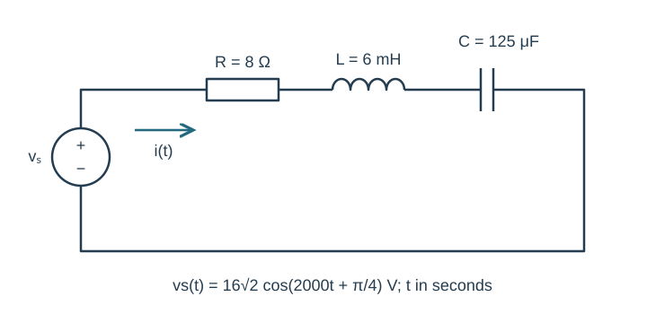
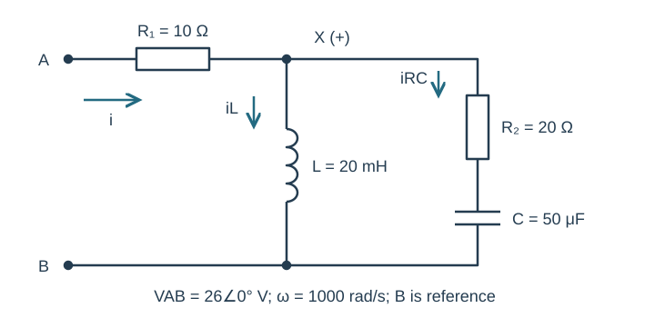
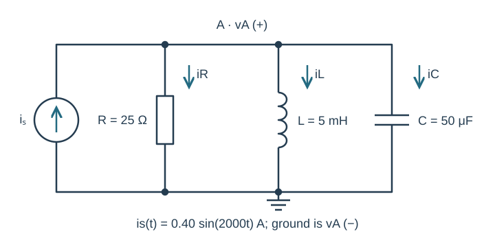
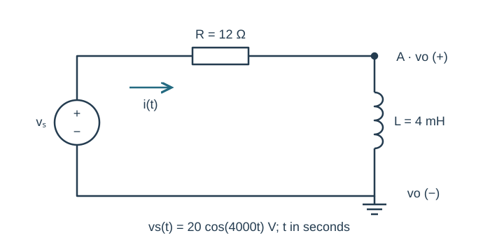
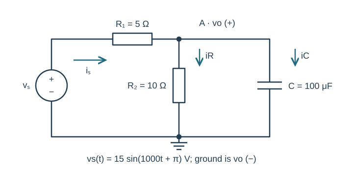

Course practice / Batch 12 / 2026-10-11 PDT
ENGR 202
正弦、相量与阻抗
Sinusoids, phasors & impedance · 第 12 组：HW 1 风格 5 题 + HW 2 风格 5 题
Order the events of a phase-lagging waveform
A sinusoidal voltage has peak amplitude 6 V, frequency 200 Hz and cosine-reference phase −120°. Use t in seconds.
- Find angular frequency, period and the peak phasor. Write v(t) using radians.
- Calculate v(0), the first upward zero crossing, first positive maximum, first downward zero crossing and first minimum at or after t = 0. Report times in ms.
- Sketch one period on axes labeled in ms and V, marking those events in chronological order.
中文提示（不含解答）
把相位先转成弧度；上升过零点与下降过零点对应不同的余弦角度。
Advance a negative sine without losing its sign
Let \(x(t)=-4\sin(600t-\pi/6)\;\mathrm V\) and \(y(t)=x(t+\pi/3600\;\mathrm s)\).
- Write positive-amplitude cosine expressions and principal-phase peak phasors for x and y.
- Find the time advance in ms and as a fraction of the period. State the phase change.
- Compare x(0), y(0), x(T/4) and y(T/4). Plot the two phasors with equal real/imaginary scales.
中文提示（不含解答）
负号也可以写成相位变化；先统一成正幅值余弦，再处理提前量。
Use a quotient to uncover a complex-number relation
Let \(a=-5+j12\) and \(b=2+j3\).
- Find a − b, ab and a/b in rectangular form.
- Give a, b, ab and a/b in polar form, using positive magnitudes and phases in (−180°,180°].
- Check (a/b)b = a and determine whether a = b². Plot a and b on equal-scale complex axes.
中文提示（不含解答）
实部为负、虚部为正的数在第二象限；除法可乘分母的共轭进行检查。
Subtract a sine from a lagging cosine
The voltage is \(v(t)=6\cos(900t-\pi/3)-4\sin(900t)\;\mathrm V\).
- Convert both signed terms to cosine-reference peak phasors and add them in rectangular form.
- Find the total magnitude and principal phase, and write a single positive-amplitude cosine. Check both forms at t = 0 and t = π/1800 s.
- Draw the signed component phasors tip-to-tail with equal axis scales. Explain the imaginary sign contributed by −4 sin(900t).
中文提示（不含解答）
注意负的正弦对应正的虚部；先处理外面的减号，再相加。
Recover a phasor from two quarter-cycle samples
A zero-offset voltage is \(v(t)=M\cos(1000t+\phi)\;\mathrm V\), with M > 0. Measurements give v(0) = −6 V and v(π/2000 s) = −8 V.
- Use the two measurements to determine the rectangular peak phasor, M and principal phase φ.
- Write v(t) and predict v(π/1000 s) and v(3π/2000 s). Check all four quarter-cycle samples.
- Find the first positive maximum at or after t = 0, in ms, and plot the phasor in the correct quadrant.
中文提示（不含解答）
四分之一周期处的电压等于相量虚部的相反数；最大值对应总相位为整圈。
A source phase that makes the series current purely real
The source \(v_s(t)=16\sqrt2\cos(2000t+\pi/4)\;\mathrm V\) drives series R = 8 Ω, L = 6 mH and C = 125 μF. Current is clockwise from the source positive terminal. Element voltages are passive drops in that direction.
- Copy the time-domain circuit and draw its impedance version, including the source phasor. Show ZL, ZC and total Z. Find I in rectangular and polar form.
- Write steady-state i(t), calculate VR, VL and VC, and check KVL. Compare current phase with source voltage phase.
- Predict i(0) and i(π/4000 s). For optional LTspice, give frequency in Hz and sine-source phase; compare these values at corresponding points in a late steady-state cycle, showing units, cursor values and current reference direction.

中文提示（不含解答）
源和总阻抗的相位都要保留；两者相减后电流可能恰好为零相位。
Reduce a series resistor and two unlike branches
At ω = 1000 rad/s, terminal A connects through R₁ = 10 Ω to node X. One X-to-B branch is L = 20 mH. The other is R₂ = 20 Ω in series with C = 50 μF. Terminal B is reference. Apply VAB = 26∠0° V peak; input current flows A to X and branch currents X to B.
- Draw the impedance circuit and show each reduction: series RC branch, parallel block, then total ZAB. Give total impedance in rectangular and polar form.
- Find input current and VX. Find both branch-current phasors.
- Verify KCL at X and VAB = VR1 + VX. State whether input current leads or lags the applied voltage.

中文提示（不含解答）
先把 R₂ 与 C 串联，再与 L 并联，最后加上 R₁；不要把三条阻抗直接相加。
Cancel reactive branch currents at one given frequency
The source \(i_s(t)=0.40\sin(2000t)\;\mathrm A\) injects current upward into node A. R = 25 Ω, L = 5 mH and C = 50 μF are separate parallel branches from A to ground. Define vA positive at A and all three branch currents downward.
- Copy the time-domain circuit and draw the impedance circuit with the cosine-reference source phasor. Find total admittance and equivalent impedance.
- Find VA and vA(t), then IR, IL and IC. Verify KCL and explain which branch currents cancel at this frequency.
- Calculate vA(0) and vA(π/4000 s). For optional simulation, compare these two values in a late steady-state cycle with labeled axes and cursor readings, using the stated reference directions.

中文提示（不含解答）
正弦源统一成余弦参考；并联网络相加的是导纳，支路电流不能只加大小。
Take the output across a grounded inductor
The source \(v_s(t)=20\cos(4000t)\;\mathrm V\) connects through R = 12 Ω to node A. L = 4 mH connects from A to ground, which also joins the source negative terminal. Output vo is positive at A relative to ground. Current flows from the source through R and L.
- Draw the impedance circuit and find total impedance and current in rectangular/polar form.
- Use voltage division to find Vo in rectangular/polar form and write vo(t). Compute VR and verify Vs = VR + Vo.
- Predict vo(0) and vo(π/8000 s). Compare the phases of current, source voltage and output voltage.

中文提示（不含解答）
输出跨在电感上，分压的分子必须是 jωL；输出不一定与电流同相。
Keep a shifted sine through a loaded RC divider
The source \(v_s(t)=15\sin(1000t+\pi)\;\mathrm V\) connects through R₁ = 5 Ω to node A. R₂ = 10 Ω and C = 100 μF each connect from A to ground. Output vo is positive at A. Source current flows through R₁ toward A; both load currents are downward.
- Find the cosine-reference source phasor, parallel-load impedance, total input impedance and source-current phasor.
- Find Vo in rectangular/polar form and write vo(t). Find load currents and the R₁ drop, checking KCL and KVL.
- Predict vo(0) and vo(π/2000 s). Give the frequency in Hz and sine-source phase for optional LTspice; compare the two points after transients settle with correct units, reasonable plot scale and cursor values.

中文提示（不含解答）
正弦相位减去 90° 后再做分压；电容支路的电流相位比该支路电压超前 90°。